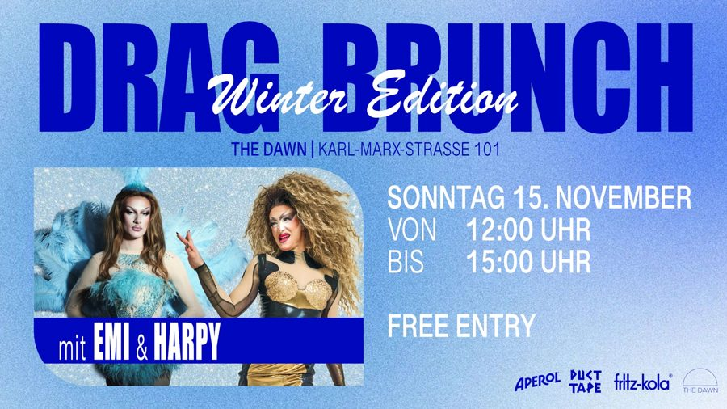

SonntagSo, 15.11.2026 · 12–15 Uhr
Winter EditionFritz-Kola Drag Brunch
The Dawn Neukölln · mit EMI & Harpy · Free Entry
WINTER EDITION DRAG BRUNCH ❄️🍹
Duct Tape und Fritz-Kola laden euch zur Winter Edition unseres Drag Brunch ein!
Weiterlesen
Am Sonntag, den 15. November, machen wir es uns auf dem Dach des The Dawn Neukölln gemütlich. Freut euch auf einen Mittag mit drei Showblöcken, winterlichen Drinks, gutem Essen und jeder Menge guter Laune.
DIE SHOW ❄️ Durch den Brunch führen euch: 👑 EMI 👑 Harpy Freut euch auf drei Showblöcke voller Drag-Performances, kleine Challenges, Gewinnspiele und jede Menge Überraschungen.
DAS ESSEN 🍽️ Das Essen bestellt ihr wie gewohnt à la carte direkt aus der Speisekarte des The Dawn.
WINTER SPECIALS 🍹 🥤 Exklusive Drink Specials Gemeinsam mit Fritz-Kola erwarten euch winterliche Signature Drinks und Specials.
🧡 Aperol for a Good Cause Wer am Eingang eine kleine Spende für unsere Drag Artists dalässt, erhält als Dankeschön einen Aperol Spritz aufs Haus.
🎭 Drei Showblöcke Während des gesamten Brunchs erwarten euch Drag-Performances. Perfekt, egal ob ihr zum Frühstück oder auf den letzten Aperol vorbeikommt.
WICHTIGE INFOS 📍 📍 The Dawn Neukölln KALLE HALLE, Karl-Marx-Straße 101, 12043 Berlin einfach mit dem Aufzug bis ins Dachgeschoss 📅 Sonntag, 15. November 🕛 12:00 bis 15:00 Uhr 💸 Eintritt frei, ihr zahlt lediglich eure Speisen und Getränke. 🪑 Tischreservierung empfohlenReserviert euren Tisch ganz einfach über OpenTable. Ohne Reservierung können wir euch leider keinen Platz garantieren.
Mehr Infos & Updates findet ihr wie immer auf Instagram bei @ducttapeberlin und @fritzkola_berWir sehen uns bei der WINTER EDITION DRAG BRUNCH. ❄️💖